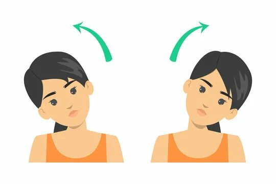
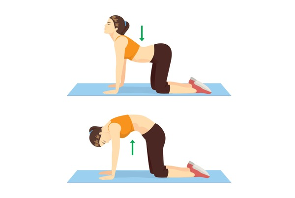
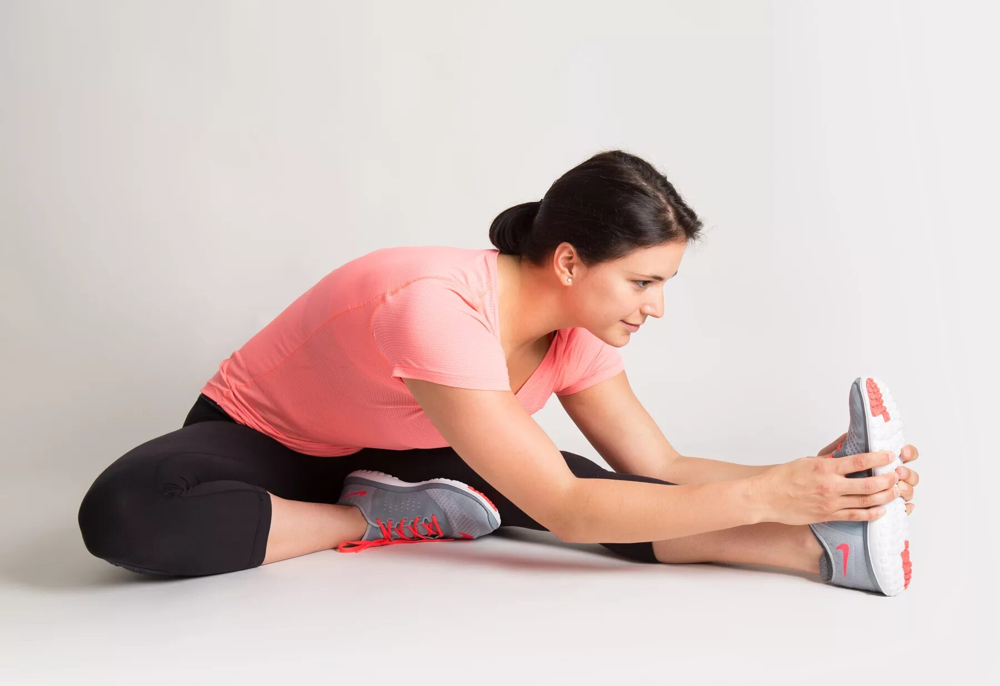
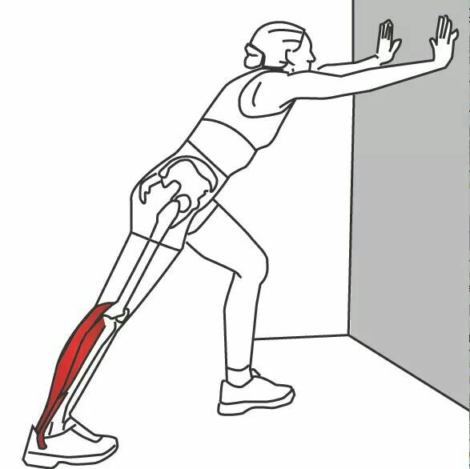

Сделает вас более гибкими
Несложная растяжка
Основные преимущества растяжки
1.Увеличение гибкости и амплитуды движений.
Растяжка расширяет диапазон движений в суставах, что облегчает выполнение повседневных задач и спортивных упражнений.
2.Профилактика травм.
Эластичные мышцы и связки меньше подвержены растяжениям, разрывам и другим травмам, особенно при интенсивных физических нагрузках.
3.Снижение мышечного напряжения и болей.
РРастяжка уменьшает вероятность мышечных спазмов, судорог и отсроченной мышечной болезненности после тренировок.
Упражнения:
Наклон головы в стороны.
«Кошка — корова».
Наклон к вытянутой ноге сидя.
Растяжка икроножных мышц.
УПРАЖНЕНИЕ 1
Наклон головы в стороны.

1.Встаньте прямо, расправьте грудную клетку, опустите плечи.
2.Плавным движением наклоните голову вправо, затем вернитесь в исходное положение и повторите в другую сторону — влево.
3.Не нужно торопиться, движения должны быть медленными. Возможна задержка в точке максимального наклона.
УПРАЖНЕНИЕ 2
«Кошка — корова».

1.Встать на четвереньки так, чтобы ладони были под плечами, а колени — под тазом. Ладони плотно прижаты к полу, пальцы раскрыты.
2.На вдохе мягко направить грудную клетку вперёд, а таз — слегка назад и вверх. Спина уходит в лёгкий прогиб.
3.На выдохе плавно округлить спину.
УПРАЖНЕНИЕ 3
Наклон к вытянутой ноге сидя.

1.Сядьте на пол, выпрямите ноги.
2.Согните одну ногу (например, левую) и прижмите стопу к бедру правой ноги.
3.Наклонитесь вперёд всем телом и обхватите стопу согнутой ноги руками.
4.Аккуратно вытягивайте спину за счёт усилий рук.
УПРАЖНЕНИЕ 4
Растяжка икроножных мышц.

1.Встаньте лицом к стене на расстоянии примерно вытянутой руки.
2.Упритесь ладонями в стену на уровне плеч.
3.Сделайте шаг назад одной ногой, сохраняя пятку прижатой к полу.
4.Медленно наклоняйтесь к стене, сгибая руки в локтях, пока не почувствуете натяжение в икроножной мышце задней ноги.
5.Удерживайте положение 20–30 секунд, сохраняя спокойное дыхание.
6.Выполните 3–4 подхода на каждую ногу.